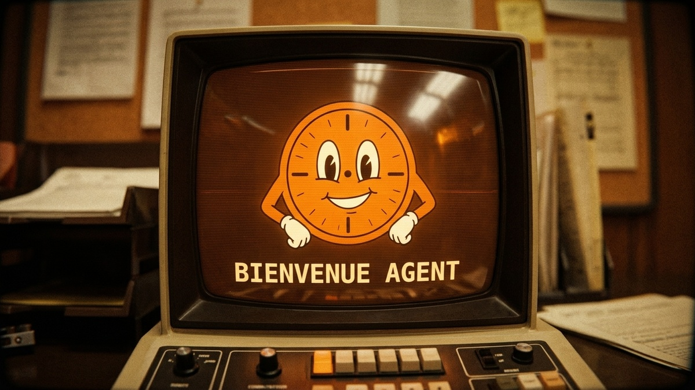

Découvrir le flux
Consultez le fonctionnement de la ligne du temps et le rôle des Minuteurs.
En savoir plusBienvenue sur le portail central du Tribunal des Variations Anachroniques. Cet intranet constitue votre outil de contrôle prioritaire pour surveiller la stabilité de la Chronologie Sacrée, enregistrer les anomalies spatio-temporelles et coordonner les interventions des brigades face aux bifurcations non autorisées.

Le flux temporel est stable et sous contrôle.
Consultez le fonctionnement de la ligne du temps et le rôle des Minuteurs.
En savoir plusTransmettez un rapport d'anomalie spatio-temporelle à la brigade.
Remplir un rapportDécouvrez les agents responsables du développement de cette interface.
Voir l'équipeBienvenue sur le portail central du Tribunal des Variations Anachroniques. Cet intranet constitue votre outil de contrôle prioritaire pour surveiller la stabilité de la Chronologie Sacrée, enregistrer les anomalies spatio-temporelles et coordonner les interventions des brigades face aux bifurcations non autorisées.
Le flux temporel est stable et sous contrôle.
Consultez le fonctionnement de la ligne du temps et le rôle des Minuteurs.
En savoir plusTransmettez un rapport d'anomalie spatio-temporelle à la brigade.
Remplir un rapportDécouvrez les agents responsables du développement de cette interface.
Voir l'équipe